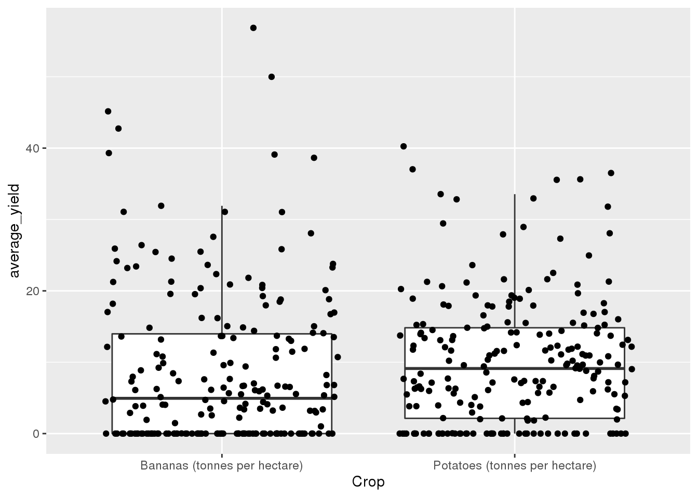

library(tidyverse)
library(here)
library(patchwork)
I will be analyzing global agricultural development using data taken from the TidyTuesday GitHub page. The primary data I will be using is contained key_crop_yields.csv, which has 13,075 observations and 14 variables: The variable Entity, a character that denotes the name of the region or country the observation comes from, the variable Code, which is the country code of the country the observation comes from (continents and regions use NA, and Year, a double ranging from 1961-2014 that represents the year the observation comes from. Additionally, there are 11 other variables representing 11 different crops and their yield in metric tonnes per hectare. The different crops represented are wheat, rice, maize, soybeans, potatoes, beans, peas, cassava, barley, cocoa beans, and bananas.
The other data of interest are found in arable_land_pin.csv, which contains the additional double variable Arable land needed to produce a fixed quantity of crops ((1.0 = 1961)), which can be used to track changes in land use efficiency over time. I will also be using the data in the files cereal_crop_yield_vs_fertilizer_application.csv and cereal_yields_vs_tractor_inputs_in_agriculture.csv, both of which track the use of fertilizer and tractors in agriculture over time, two important factors in farming efficiency. Fertilizer contains the additional variables Cereal yield and Nitrogen fertilizer use, while Tractor_inputs contains Tractors per 100 sq km arable land, Cereal yield (kilograms per hectare), and Total population, which is taken from the Gapminder dataset. Each of these 3 datasets also contain the key variables Entity, Code, and Year.
filepath <- here('data', 'tidytuesday', 'data', '2020', '2020-09-01')
files <- dir(filepath)
csv_vec <- str_detect(files, '(.csv$)') # read only .csv files
dat <- list()
for (i in 1:length(files)) {
if (csv_vec[i] & files[i] != "land_use_vs_yield_change_in_cereal_production.csv") {
dat[[i]] <- read_csv(paste(filepath, files[i], sep='/'))
}
}
Question 1:
First, I would like to determine what the most abundant crops are and whether this has changed over time. Before that, I’ll have to transform the data into a long format and filter out non-countries to prevent double counting. Then, I can sum the total global crop yield and plot it by year.
crop_yields_long <- dat[[4]] %>%
pivot_longer(., -c('Entity', 'Code', 'Year'), names_to = 'Crop', values_to = 'Value') %>%
filter(is.na(Code) == FALSE)
total_crops_by_year <- crop_yields_long %>%
group_by(Year, Crop) %>%
summarize(Crop_Total = sum(Value, na.rm = TRUE))
ggplot(total_crops_by_year, aes(x = Year, y = Crop_Total, color = Crop)) +
geom_line()
 It seems that the two most abundant crops in tonnes per hectare are bananas and potatoes. Bananas began as the most abundant in 1961, but were surpassed by potatoes sometime in the mid 70’s. How do the distribution of yields of these two crops compare?
It seems that the two most abundant crops in tonnes per hectare are bananas and potatoes. Bananas began as the most abundant in 1961, but were surpassed by potatoes sometime in the mid 70’s. How do the distribution of yields of these two crops compare?
avg_yield <- crop_yields_long %>%
filter(Crop == 'Bananas (tonnes per hectare)' | Crop == 'Potatoes (tonnes per hectare)') %>%
group_by(Entity, Code, Crop) %>%
summarize(average_yield = sum(Value, na.rm = TRUE) /
(max(crop_yields_long$Year) - min(crop_yields_long$Year)))
ggplot(avg_yield, aes(Crop, average_yield)) +
geom_boxplot(outlier.shape = NA) +
geom_jitter()

In the above plot, each point represents a country (regions and subregions were removed from the data) and its average yield of each crop per year since 1961. Looking at the plot, it appears that there is greater variability in banana production, suggesting that fewer countries produce large amounts of bananas, contributing to the crop’s abundance.
crop_yields_long %>%
filter(Crop == 'Potatoes (tonnes per hectare)') %>%
group_by(Entity, Code) %>%
summarize(average_yield = sum(Value, na.rm = TRUE) /
(max(crop_yields_long$Year) - min(crop_yields_long$Year))) %>%
ungroup() %>%
summarize(Minimum = min(average_yield),
Q1 = quantile(average_yield, probs = .25),
Median = median(average_yield),
Mean = mean(average_yield),
Q3 = quantile(average_yield, probs = 0.75),
Maximum = max(average_yield),
Stdev. = sd(average_yield))
## # A tibble: 1 x 7
## Minimum Q1 Median Mean Q3 Maximum Stdev.
## <dbl> <dbl> <dbl> <dbl> <dbl> <dbl> <dbl>
## 1 0 2.14 9.12 10.1 14.8 40.2 8.96
crop_yields_long %>%
filter(Crop == 'Bananas (tonnes per hectare)') %>%
group_by(Entity, Code) %>%
summarize(average_yield = sum(Value, na.rm = TRUE) /
(max(crop_yields_long$Year) - min(crop_yields_long$Year))) %>%
ungroup() %>%
summarize(Minimum = min(average_yield),
Q1 = quantile(average_yield, probs = .25),
Median = median(average_yield),
Mean = mean(average_yield),
Q3 = quantile(average_yield, probs = 0.75),
Maximum = max(average_yield),
Stdev. = sd(average_yield))
## # A tibble: 1 x 7
## Minimum Q1 Median Mean Q3 Maximum Stdev.
## <dbl> <dbl> <dbl> <dbl> <dbl> <dbl> <dbl>
## 1 0 0 4.94 8.77 14.0 56.9 10.8
The two tables of summary statistics above further iterate this difference in variability, as bananas have a higher standard deviation of 10.8 to potatoes’ 8.96.
Question 2:
Which countries have seen the greatest increase in farming efficiency? This can be measured using the data found in arable_land_pin.csv, which details the amount of arable land needed to produce a fixed amount of crops (determined by the country’s 1961 baseline crop production). This should be relatively straight forward, as I would simply need to filter for the most recent data. I will also factor the values to spatially rank the countries by increase in efficiency.
change_in_land_efficiency_since_1961 <- dat[[1]] %>%
rename(Arable_Land_Needed=
`Arable land needed to produce a fixed quantity of crops ((1.0 = 1961))`) %>%
filter(is.na(Code) == FALSE, Year == max(Year))
change_in_land_top20 <- change_in_land_efficiency_since_1961 %>%
arrange(Arable_Land_Needed) %>%
slice(1:20)
change_in_land_top20$Entity <- factor(change_in_land_top20$Entity,
levels = change_in_land_top20$Entity[order(
change_in_land_top20$Arable_Land_Needed, decreasing = TRUE)])
ggplot(change_in_land_top20, aes(x = Entity, y = Arable_Land_Needed)) +
geom_col() +
coord_flip()
 Above are shown the 20 countries with the greatest increase in farming efficiency since 1961 (Note: a lower value denotes a greater increase in farming efficiency in this context). It appears most of these countries come from Africa, South-Central America, and various regions in West and South-East Asia. This data may suggest that advances in agriculture since 1961 have mostly benefited these regions.
Above are shown the 20 countries with the greatest increase in farming efficiency since 1961 (Note: a lower value denotes a greater increase in farming efficiency in this context). It appears most of these countries come from Africa, South-Central America, and various regions in West and South-East Asia. This data may suggest that advances in agriculture since 1961 have mostly benefited these regions.
Question 3:
How much do tractor use and fertilizer use contribute to this increase in farming efficiency? To answer this question, I will plot crop yield against each of the two associated datasets. However, there are some issues namely with the tractor dataset. Because of its joining with the gapminder dataset, there are many observations that have no use, including observations with Year variables corresponding years before 1961. After properly filtering the data, we can finally plot the data.
tractors_numeric <- dat[[3]] %>%
filter(str_detect(dat[[3]]$Year, '[:alpha:]') == FALSE) %>%
mutate(Year = as.numeric(Year)) %>%
filter(is.na(`Cereal yield (kilograms per hectare) (kg per hectare)`) == FALSE,
is.na(`Tractors per 100 sq km arable land`) == FALSE)
ggplot(tractors_numeric, aes(x =`Tractors per 100 sq km arable land`,
y = `Cereal yield (kilograms per hectare) (kg per hectare)`)) +
geom_point() +
geom_smooth()
## `geom_smooth()` using method = 'gam' and formula 'y ~ s(x, bs = "cs")'
 A majority of the data appears to follow a relatively tight grouping associating increasing crop yield with a higher rate of tractor use. However, there are a few different outliers seen in the data that have significantly higher yields than and significantly lower tractor amounts. These observations can be viewed by sorting the data, as they actually seem to have the highest crop yields out of all of the data.
A majority of the data appears to follow a relatively tight grouping associating increasing crop yield with a higher rate of tractor use. However, there are a few different outliers seen in the data that have significantly higher yields than and significantly lower tractor amounts. These observations can be viewed by sorting the data, as they actually seem to have the highest crop yields out of all of the data.
tractors_numeric %>%
arrange(desc(`Cereal yield (kilograms per hectare) (kg per hectare)`))
## # A tibble: 6,902 x 6
## Entity Code Year `Tractors per 10… `Cereal yield (kil… `Total populatio…
## <chr> <chr> <dbl> <dbl> <dbl> <dbl>
## 1 United A… ARE 1998 76.4 17656. 2813000
## 2 United A… ARE 2000 63.3 17355. 3134000
## 3 United A… ARE 1999 64.0 17023. 2966000
## 4 United A… ARE 1997 60.4 15894 2671000
## 5 Saint Vi… VCT 2000 208 15000 108000
## 6 Saint Vi… VCT 2002 226 14857. 108000
## 7 Saint Vi… VCT 2003 224 14825 108000
## 8 Saint Vi… VCT 2001 212 14286. 108000
## 9 Puerto R… PRI 1983 486. 9789. 3202000
## 10 Puerto R… PRI 1981 523. 9695. 3132000
## # … with 6,892 more rows
It appears that the offending outliers are uniquely from the United Arab Emirates and Saint Vincent and the Grenadines. Both of these countries are relatively small compared to most others in the world, so there may be some issue with measuring smaller countries in this way.
The data for fertilizer use appears to be much more usable, and should not be much of an issue to work with, after filtering out observations for which there is no recorded data.
fertilizer_use <- dat[[2]] %>%
filter(is.na(`Cereal yield (tonnes per hectare)`) == FALSE) %>%
filter(is.na(`Nitrogen fertilizer use (kilograms per hectare)`) == FALSE)
ggplot(fertilizer_use, aes(x = `Nitrogen fertilizer use (kilograms per hectare)`,
y = `Cereal yield (tonnes per hectare)`)) +
geom_point() +
geom_smooth()
## `geom_smooth()` using method = 'gam' and formula 'y ~ s(x, bs = "cs")'
The fertilizer data appears to follow the same general shape as the tractor data.